9618-2021-mj-31-q08
May/June 2021 · Paper 31 · Question 8 · 8 marks
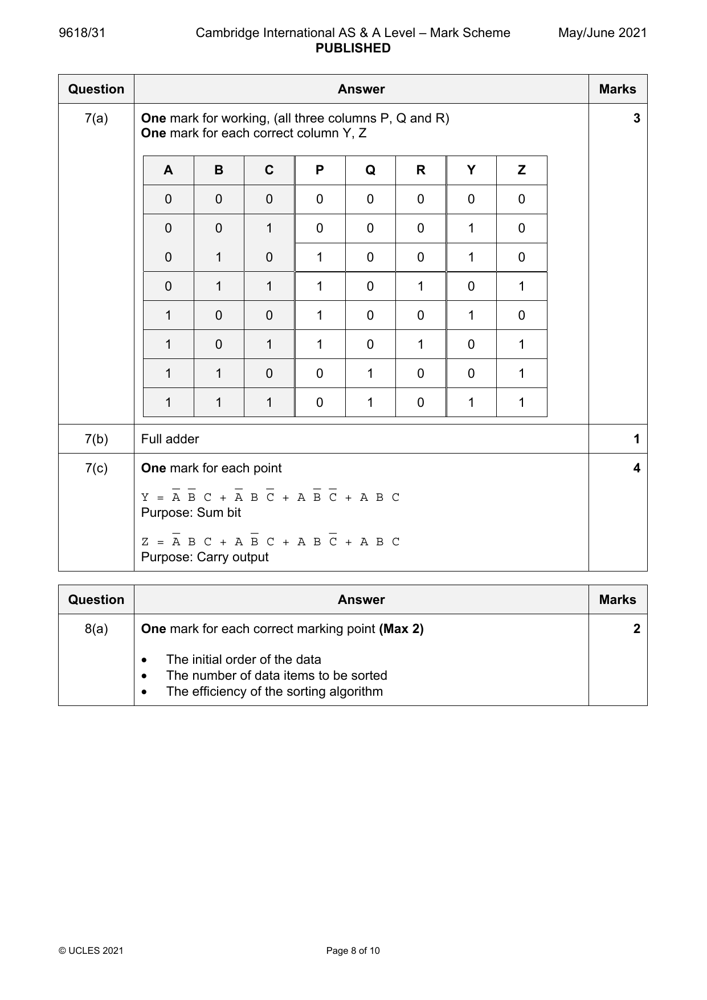

8(a) One mark for each correct marking point (Max 2) 2
• The initial order of the data
• The number of data items to be sorted
• The efficiency of the sorting algorithm
© UCLES 2021 Page 8 of 10
8(b) One mark for each marking point (max 6) 6
MP1 Use of FOR loop to cycle through the whole year group
MP2 Temporary storage of the score being ‘inserted’
MP3 Temporary storage of the corresponding name elements
MP4 Use of WHILE loop with correct exit clause
MP5 Moving of all three elements of data to next array elements
MP6 Correct updating of counter variable
MP7 Final insertion of all three data elements
Example algorithm
YearSize ← 249
FOR Student ← 2 to YearSize
Temp1 ← Score[Student]
Temp2 ← Name[Student,1]
Temp3 ← Name[Student,2]
Counter ← Student
WHILE Counter > 1 AND Score[Counter - 1] < Temp1
Score[Counter] ← Score[Counter - 1]
Name[Counter,1] ← Name[Counter - 1,1]
Name[Counter,2] ← Name[Counter - 1,2]
Counter ← Counter – 1
ENDWHILE
Score[Counter] ← Temp1
Name[Counter,1] ← Temp2
Name[Counter,2] ← Temp3
NEXT Student
Question Answer Marks
Official mark scheme pages: 8, 9 · source PDF URL
9618-2021-mj-32-q08
May/June 2021 · Paper 32 · Question 8 · 8 marks

8(a) One mark for each correct marking point (Max 2) 2
• The initial order of the data
• The number of data items to be sorted
• The efficiency of the sorting algorithm
© UCLES 2021 Page 8 of 10
8(b) One mark for each marking point (max 6) 6
MP1 Use of FOR loop to cycle through the whole year group
MP2 Temporary storage of the score being ‘inserted’
MP3 Temporary storage of the corresponding name elements
MP4 Use of WHILE loop with correct exit clause
MP5 Moving of all three elements of data to next array elements
MP6 Correct updating of counter variable
MP7 Final insertion of all three data elements
Example algorithm
YearSize ← 249
FOR Student ← 2 to YearSize
Temp1 ← Score[Student]
Temp2 ← Name[Student,1]
Temp3 ← Name[Student,2]
Counter ← Student
WHILE Counter > 1 AND Score[Counter - 1] < Temp1
Score[Counter] ← Score[Counter - 1]
Name[Counter,1] ← Name[Counter - 1,1]
Name[Counter,2] ← Name[Counter - 1,2]
Counter ← Counter – 1
ENDWHILE
Score[Counter] ← Temp1
Name[Counter,1] ← Temp2
Name[Counter,2] ← Temp3
NEXT Student
Question Answer Marks
Official mark scheme pages: 8, 9 · source PDF URL
9618-2021-mj-33-q08
May/June 2021 · Paper 33 · Question 8 · 8 marks

8(a) One mark for each correct marking point (Max 2) 2
• The initial order of the data
• The number of data items to be sorted
• The efficiency of the sorting algorithm
© UCLES 2021 Page 8 of 10
8(b) One mark for each marking point (max 6) 6
MP1 Use of FOR loop to cycle through the whole year group
MP2 Temporary storage of the score being ‘inserted’
MP3 Temporary storage of the corresponding name elements
MP4 Use of WHILE loop with correct exit clause
MP5 Moving of all three elements of data to next array elements
MP6 Correct updating of counter variable
MP7 Final insertion of all three data elements
Example algorithm
YearSize ← 249
FOR Student ← 2 to YearSize
Temp1 ← Score[Student]
Temp2 ← Name[Student,1]
Temp3 ← Name[Student,2]
Counter ← Student
WHILE Counter > 1 AND Score[Counter - 1] < Temp1
Score[Counter] ← Score[Counter - 1]
Name[Counter,1] ← Name[Counter - 1,1]
Name[Counter,2] ← Name[Counter - 1,2]
Counter ← Counter – 1
ENDWHILE
Score[Counter] ← Temp1
Name[Counter,1] ← Temp2
Name[Counter,2] ← Temp3
NEXT Student
Question Answer Marks
Official mark scheme pages: 8, 9 · source PDF URL
9618-2021-on-31-q10
Oct/Nov 2021 · Paper 31 · Question 10 · 13 marks
10(a) One mark for each correct marking point (Max 3) 3
• Must have a base case/stopping condition
• Must have a general case
• … which calls itself (recursively) // Defined in terms of itself
• … which changes its state and moves towards the base case
Unwinding can occur once the base case is reached.
10(b) One mark for each correct marking point (Max 3) 3
• A stack is a LIFO data structure
• Each recursive call is pushed onto the stack
• …. and is then popped as the function ends
• Enables backtracking/unwinding
… to maintain the required order.
10(c) One mark for each marking point (Max 2) 2
• Linked List
• Queue
Binary Tree
10(d) One mark for each marking point (Max 5) 5
• Checking if stack is full / empty using IF … THEN … (ELSE) … ENDIF
• … correctly using StackFull() function
• RETURN suitable message if stack is full
• RETURN message if space available on stack
• Incrementing TopOfStack pointer if space available
• Assigning new data using correct NewInteger variable
• … to correct the array element in ArrayStack[] array.
Example algorithm
FUNCTION AddInteger(NewInteger : INTEGER) RETURNS STRING
IF StackFull() THEN
RETURN "The stack is full"
ELSE
TopOfStack ← TopOfStack + 1
ArrayStack[TopOfStack] ← NewInteger
RETURN "Item added"
ENDIF
ENDFUNCTION
© UCLES 2021 Page 10 of 10
Official mark scheme pages: 10 · source PDF URL
9618-2021-on-32-q10
Oct/Nov 2021 · Paper 32 · Question 10 · 13 marks
10(a) One mark for each correct marking point (Max 3) 3
• Must have a base case/stopping condition
• Must have a general case
• … which calls itself (recursively) // Defined in terms of itself
• … which changes its state and moves towards the base case
Unwinding can occur once the base case is reached.
10(b) One mark for each correct marking point (Max 3) 3
• A stack is a LIFO data structure
• Each recursive call is pushed onto the stack
• …. and is then popped as the function ends
• Enables backtracking/unwinding
… to maintain the required order.
10(c) One mark for each marking point (Max 2) 2
• Linked List
• Queue
Binary Tree
10(d) One mark for each marking point (Max 5) 5
• Checking if stack is full / empty using IF … THEN … (ELSE) … ENDIF
• … correctly using StackFull() function
• RETURN suitable message if stack is full
• RETURN message if space available on stack
• Incrementing TopOfStack pointer if space available
• Assigning new data using correct NewInteger variable
• … to correct the array element in ArrayStack[] array.
Example algorithm
FUNCTION AddInteger(NewInteger : INTEGER) RETURNS STRING
IF StackFull() THEN
RETURN "The stack is full"
ELSE
TopOfStack ← TopOfStack + 1
ArrayStack[TopOfStack] ← NewInteger
RETURN "Item added"
ENDIF
ENDFUNCTION
© UCLES 2021 Page 10 of 10
Official mark scheme pages: 10 · source PDF URL
9618-2022-mj-32-q02
May/June 2022 · Paper 32 · Question 2 · 7 marks
2(a) studies(sam, history). 2
tutors(nina, sam).
2(b) freya, hua // hua, freya 1
2(c) one mark for correct use of X 4
one mark for two other variables in correct positions
one mark for three correct clauses in any order
one mark for correct syntax
teaches(R, S),
studies(X, S),
tutors(R, X).
© UCLES 2022 Page 4 of 9
Official mark scheme pages: 4 · source PDF URL
9618-2022-mj-32-q08
May/June 2022 · Paper 32 · Question 8 · 13 marks
8(a) INTEGER 4
Official mark scheme pages: 8 · source PDF URL
9618-2022-on-31-q12
Oct/Nov 2022 · Paper 31 · Question 12 · 9 marks
12(a) One mark for each point (Max 6) 6
• Initialisation of upper bound
• Test if upper bound is less than lower bound
• Re-setting of mid value if current value is lower than the target
• Re-setting of mid value if current value is higher than the target
• Finding the value
• Correct termination of loop
Lower 0
Upper 99
Mid 0
Exit FALSE
OUTPUT "Enter the name to be found "
INPUT Target
REPEAT
IF Upper < Lower THEN
OUTPUT Target, " does not exist"
Exit TRUE
ENDIF
Mid Lower + (Upper – Lower + 1) DIV 2
IF Names[Mid] < Target THEN
Lower Mid + 1
ENDIF
IF Names[Mid] > Target THEN
Upper Mid - 1
ENDIF
IF Names[Mid] = Target THEN
OUTPUT Target, " was found at location ", Mid
Exit TRUE
ENDIF
UNTIL Exit // UNTIL Exit = TRUE
12(b)(i) O(n) 1
© UCLES 2022 Page 14 of 15
12(b)(ii) One mark for each point (Max 2) 2
• O(log n) is a time complexity that uses logarithmic time.
• The time taken goes up linearly as the number of items rises exponentially
• O(log n) is the worst case scenario (time complexity for a binary search).
© UCLES 2022 Page 15 of 15
Official mark scheme pages: 14, 15 · source PDF URL
9618-2022-on-32-q11
Oct/Nov 2022 · Paper 32 · Question 11 · 10 marks
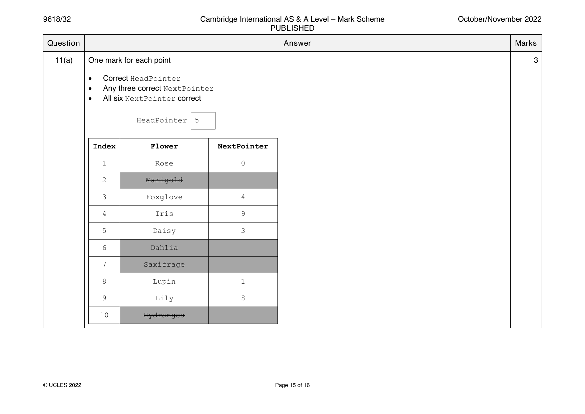
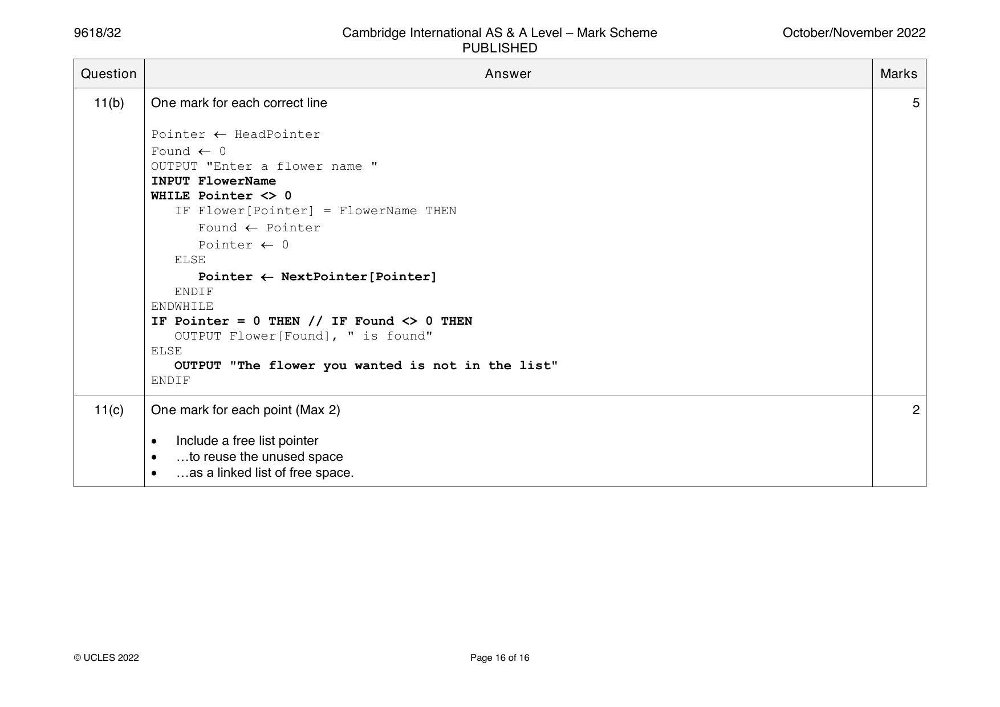
11(a) One mark for each point 3
• Correct HeadPointer
• Any three correct NextPointer
• All six NextPointer correct
HeadPointer 5
Index Flower NextPointer
1 Rose 0
2 Marigold
3 Foxglove 4
4 Iris 9
5 Daisy 3
6 Dahlia
7 Saxifrage
8 Lupin 1
9 Lily 8
10 Hydrangea
© UCLES 2022 Page 15 of 16
11(b) One mark for each correct line 5
Pointer HeadPointer
Found 0
OUTPUT "Enter a flower name "
INPUT FlowerName
WHILE Pointer <> 0
IF Flower[Pointer] = FlowerName THEN
Found Pointer
Pointer 0
ELSE
Pointer NextPointer[Pointer]
ENDIF
ENDWHILE
IF Pointer = 0 THEN // IF Found <> 0 THEN
OUTPUT Flower[Found], " is found"
ELSE
OUTPUT "The flower you wanted is not in the list"
ENDIF
11(c) One mark for each point (Max 2) 2
• Include a free list pointer
• …to reuse the unused space
• …as a linked list of free space.
© UCLES 2022 Page 16 of 16
Official mark scheme pages: 15, 16 · source PDF URL
9618-2022-on-33-q12
Oct/Nov 2022 · Paper 33 · Question 12 · 9 marks
12(a) One mark for each point (Max 6) 6
• Initialisation of upper bound
• Test if upper bound is less than lower bound
• Re-setting of mid value if current value is lower than the target
• Re-setting of mid value if current value is higher than the target
• Finding the value
• Correct termination of loop
Lower 0
Upper 99
Mid 0
Exit FALSE
OUTPUT "Enter the name to be found "
INPUT Target
REPEAT
IF Upper < Lower THEN
OUTPUT Target, " does not exist"
Exit TRUE
ENDIF
Mid Lower + (Upper – Lower + 1) DIV 2
IF Names[Mid] < Target THEN
Lower Mid + 1
ENDIF
IF Names[Mid] > Target THEN
Upper Mid - 1
ENDIF
IF Names[Mid] = Target THEN
OUTPUT Target, " was found at location ", Mid
Exit TRUE
ENDIF
UNTIL Exit // UNTIL Exit = TRUE
12(b)(i) O(n) 1
© UCLES 2022 Page 14 of 15
12(b)(ii) One mark for each point (Max 2) 2
• O(log n) is a time complexity that uses logarithmic time.
• The time taken goes up linearly as the number of items rises exponentially
• O(log n) is the worst case scenario (time complexity for a binary search).
© UCLES 2022 Page 15 of 15
Official mark scheme pages: 14, 15 · source PDF URL
9618-2023-mj-31-q03
May/June 2023 · Paper 31 · Question 3 · 6 marks
3(a) One mark for each correct hash value (Max 2) 2
Record key Hash value
1030 1
1050 0
1025 2
3(b) One mark per mark point (Max 4) 4
MP1 A collision occurs when the record key doesn’t match the stored record
key
MP2 … this means the determined storage location has already been used
for another record.
If the record is to be stored
MP3 Search the file linearly
MP4 … to find the next available storage space (closed hash)
MP5 Search the overflow area linearly
MP6 … to find next available storage space (open hash)
If the record is to be found
MP7 … search the overflow area linearly (open hash) until the matching
record key is found
MP8 … search linearly from where you are (closed hash) until the matching
record key is found
MP9 If not found record is not in file
Question Answer Marks
Official mark scheme pages: 4 · source PDF URL
9618-2023-mj-31-q10
May/June 2023 · Paper 31 · Question 10 · 5 marks
10 One mark for each correctly completed line (Max 5) 5
DECLARE Account : STRING
OPENFILE "ActiveFile.txt" FOR READ
OPENFILE "ArchiveFile.txt" FOR WRITE
WHILE NOT EOF("ActiveFile.txt")
READFILE "ActiveFile.txt", Account
IF Account = "" THEN
WRITEFILE "ArchiveFile.txt", "Account not present"
ELSE
WRITEFILE "ArchiveFile.txt", Account
ENDIF
ENDWHILE
CLOSEFILE "ActiveFile.txt"
CLOSEFILE "ArchiveFile.txt"
Question Answer Marks
Official mark scheme pages: 8 · source PDF URL
9618-2023-mj-31-q11
May/June 2023 · Paper 31 · Question 11 · 11 marks

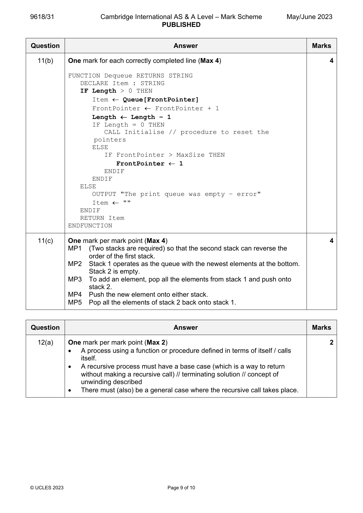
11(a) One mark per mark point (Max 3) 3
correctly defined constant
correctly defined array
three correctly defined integers
CONSTANT MaxSize = 60
DECLARE Queue : ARRAY[1:60] OF STRING // DECLARE Queue :
ARRAY[0:59] OF STRING // DECLARE Queue : ARRAY[1:MaxSize]
OF STRING // DECLARE Queue : ARRAY[0:MaxSize - 1] OF
STRING
DECLARE FrontPointer : INTEGER
DECLARE RearPointer : INTEGER
DECLARE Length : INTEGER
© UCLES 2023 Page 8 of 10
11(b) One mark for each correctly completed line (Max 4) 4
FUNCTION Dequeue RETURNS STRING
DECLARE Item : STRING
IF Length > 0 THEN
Item Queue[FrontPointer]
FrontPointer FrontPointer + 1
Length Length – 1
IF Length = 0 THEN
CALL Initialise // procedure to reset the
pointers
ELSE
IF FrontPointer > MaxSize THEN
FrontPointer 1
ENDIF
ENDIF
ELSE
OUTPUT "The print queue was empty – error"
Item ""
ENDIF
RETURN Item
ENDFUNCTION
11(c) One mark per mark point (Max 4) 4
MP1 (Two stacks are required) so that the second stack can reverse the
order of the first stack.
MP2 Stack 1 operates as the queue with the newest elements at the bottom.
Stack 2 is empty.
MP3 To add an element, pop all the elements from stack 1 and push onto
stack 2.
MP4 Push the new element onto either stack.
MP5 Pop all the elements of stack 2 back onto stack 1.
Question Answer Marks
Official mark scheme pages: 8, 9 · source PDF URL
9618-2023-mj-31-q12
May/June 2023 · Paper 31 · Question 12 · 7 marks
12(a) One mark per mark point (Max 2) 2
A process using a function or procedure defined in terms of itself / calls
itself.
A recursive process must have a base case (which is a way to return
without making a recursive call) // terminating solution // concept of
unwinding described
There must (also) be a general case where the recursive call takes place.
© UCLES 2023 Page 9 of 10
12(b) One mark per mark point (Max 5) 5
Call number column correct
Function call and Number columns correct
Result column down to base case (Winding) rows 1–6 correct
Result column down from base case (Unwinding) rows 7–10 correct
Return value column correct
Call Function call Number Result Return
number value
1 Fib(5) 5 Fib(4) + Fib(3)
2 Fib(4) 4 Fib(3) + Fib(2)
3 Fib(3) 3 Fib(2) + Fib(1)
4 Fib(2) 2 Fib(1) + Fib(0)
5 Fib(1) 1 1 1
6 Fib(0) 0 0 0
(4) Fib(2) 2 1 + 0 1
(3) Fib(3) 3 1 + 1 2
(2) Fib(4) 4 2 + 1 3
(1) Fib(5) 5 3 + 2 5
© UCLES 2023 Page 10 of 10
Official mark scheme pages: 9, 10 · source PDF URL
9618-2023-mj-32-q02
May/June 2023 · Paper 32 · Question 2 · 5 marks
2(a) One mark per mark point (Max 3) 3
MP1 records are stored in a particular order
MP2 the order is determined based on the value in a key field
MP3 records are accessed one after the other
MP4 records can be found by searching from the beginning of the file,
record by record,
MP5 … until the required record is found or key field value is exceeded.
2(b) One mark for each correct hash value (Max 2) 2
Record key Hash value
3003 3
1029 4
7630 0
© UCLES 2023 Page 4 of 12
Official mark scheme pages: 4 · source PDF URL
9618-2023-mj-32-q06
May/June 2023 · Paper 32 · Question 6 · 9 marks
6(a) One mark for TYPE TAppointments and ENDTYPE correct 4
One mark for every two correct declarations (Max 3)
Example answer
TYPE TAppointments
DECLARE Name : STRING
DECLARE DateOfBirth : DATE
DECLARE Telephone : STRING
DECLARE LastAppointment : DATE
DECLARE NextAppointment : DATE
DECLARE TreatmentsComplete : BOOLEAN
ENDTYPE
6(b) One mark for each correctly completed line (Max 5) 5
DECLARE DentalRecord : ARRAY[1:250] OF TAppointments
DECLARE DentalFile : STRING
DECLARE Count : INTEGER
DentalFile "DentalFile.dat"
OUTPUT "The file ", DentalFile, " contains these records:"
OPENFILE DentalFile FOR RANDOM
Count 1
REPEAT
SEEK DentalFile, Count
GETRECORD DentalFile, DentalRecord[Count]
OUTPUT DentalRecord[Count]
Count Count + 1
UNTIL EOF(DentalFile)
CLOSEFILE DentalFile
Question Answer Marks
Official mark scheme pages: 7 · source PDF URL
9618-2023-mj-32-q11
May/June 2023 · Paper 32 · Question 11 · 10 marks
11(a)(i) One mark for every two correct identifiers (Max 2) 2
Identifier Data type Description
Queue STRING An array to store the contents of the queue.
RearPointer INTEGER Points to the last term of the queue.
Length INTEGER Indicates the number of items in the queue.
FrontPointer INTEGER Points to the first term of the queue.
11(a)(ii) One mark for each correctly completed line (Max 5) 5
CONSTANT MaxLength = 50
DECLARE FrontPointer : INTEGER
DECLARE RearPointer : INTEGER
DECLARE Length : INTEGER
DECLARE Queue : ARRAY[0:MaxLength – 1] OF STRING
// Initialisation of queue
PROCEDURE Initialise
FrontPointer -1
RearPointer -1
Length 0
ENDPROCEDURE
// Adding a new item to the queue
PROCEDURE Enqueue(NewItem : STRING)
IF Length < MaxLength THEN // IF Length <= MaxLength -
1 THEN
RearPointer RearPointer + 1
IF RearPointer > MaxLength – 1 THEN
RearPointer 0
ENDIF
Queue[RearPointer] NewItem
Length Length + 1
ENDIF
ENDPROCEDURE
11(b) One mark per mark point (Max 3) 3
Print jobs are expected to be actioned by the printer in the order they are
received
… because the printer queue is a queue, the first job to be sent to the
printer would be the first job printed.
If the printer queue was on a stack, the first job the printer received would
not be printed until all the other jobs have been printed.
© UCLES 2023 Page 12 of 12
Official mark scheme pages: 12 · source PDF URL
9618-2023-mj-33-q03
May/June 2023 · Paper 33 · Question 3 · 6 marks
3(a) One mark for each correct hash value (Max 2) 2
Record key Hash value
1030 1
1050 0
1025 2
3(b) One mark per mark point (Max 4) 4
MP1 A collision occurs when the record key doesn’t match the stored record
key
MP2 … this means the determined storage location has already been used
for another record.
If the record is to be stored
MP3 Search the file linearly
MP4 … to find the next available storage space (closed hash)
MP5 Search the overflow area linearly
MP6 … to find next available storage space (open hash)
If the record is to be found
MP7 … search the overflow area linearly (open hash) until the matching
record key is found
MP8 … search linearly from where you are (closed hash) until the matching
record key is found
MP9 If not found record is not in file
Question Answer Marks
Official mark scheme pages: 4 · source PDF URL
9618-2023-mj-33-q10
May/June 2023 · Paper 33 · Question 10 · 5 marks
10 One mark for each correctly completed line (Max 5) 5
DECLARE Account : STRING
OPENFILE "ActiveFile.txt" FOR READ
OPENFILE "ArchiveFile.txt" FOR WRITE
WHILE NOT EOF("ActiveFile.txt")
READFILE "ActiveFile.txt", Account
IF Account = "" THEN
WRITEFILE "ArchiveFile.txt", "Account not present"
ELSE
WRITEFILE "ArchiveFile.txt", Account
ENDIF
ENDWHILE
CLOSEFILE "ActiveFile.txt"
CLOSEFILE "ArchiveFile.txt"
Question Answer Marks
Official mark scheme pages: 8 · source PDF URL
9618-2023-mj-33-q11
May/June 2023 · Paper 33 · Question 11 · 11 marks

11(a) One mark per mark point (Max 3) 3
correctly defined constant
correctly defined array
three correctly defined integers
CONSTANT MaxSize = 60
DECLARE Queue : ARRAY[1:60] OF STRING // DECLARE Queue :
ARRAY[0:59] OF STRING // DECLARE Queue : ARRAY[1:MaxSize]
OF STRING // DECLARE Queue : ARRAY[0:MaxSize - 1] OF
STRING
DECLARE FrontPointer : INTEGER
DECLARE RearPointer : INTEGER
DECLARE Length : INTEGER
© UCLES 2023 Page 8 of 10
11(b) One mark for each correctly completed line (Max 4) 4
FUNCTION Dequeue RETURNS STRING
DECLARE Item : STRING
IF Length > 0 THEN
Item Queue[FrontPointer]
FrontPointer FrontPointer + 1
Length Length – 1
IF Length = 0 THEN
CALL Initialise // procedure to reset the
pointers
ELSE
IF FrontPointer > MaxSize THEN
FrontPointer 1
ENDIF
ENDIF
ELSE
OUTPUT "The print queue was empty – error"
Item ""
ENDIF
RETURN Item
ENDFUNCTION
11(c) One mark per mark point (Max 4) 4
MP1 (Two stacks are required) so that the second stack can reverse the
order of the first stack.
MP2 Stack 1 operates as the queue with the newest elements at the bottom.
Stack 2 is empty.
MP3 To add an element, pop all the elements from stack 1 and push onto
stack 2.
MP4 Push the new element onto either stack.
MP5 Pop all the elements of stack 2 back onto stack 1.
Question Answer Marks
Official mark scheme pages: 8, 9 · source PDF URL
9618-2023-mj-33-q12
May/June 2023 · Paper 33 · Question 12 · 7 marks
12(a) One mark per mark point (Max 2) 2
A process using a function or procedure defined in terms of itself / calls
itself.
A recursive process must have a base case (which is a way to return
without making a recursive call) // terminating solution // concept of
unwinding described
There must (also) be a general case where the recursive call takes place.
© UCLES 2023 Page 9 of 10
12(b) One mark per mark point (Max 5) 5
Call number column correct
Function call and Number columns correct
Result column down to base case (Winding) rows 1–6 correct
Result column down from base case (Unwinding) rows 7–10 correct
Return value column correct
Call Function call Number Result Return
number value
1 Fib(5) 5 Fib(4) + Fib(3)
2 Fib(4) 4 Fib(3) + Fib(2)
3 Fib(3) 3 Fib(2) + Fib(1)
4 Fib(2) 2 Fib(1) + Fib(0)
5 Fib(1) 1 1 1
6 Fib(0) 0 0 0
(4) Fib(2) 2 1 + 0 1
(3) Fib(3) 3 1 + 1 2
(2) Fib(4) 4 2 + 1 3
(1) Fib(5) 5 3 + 2 5
© UCLES 2023 Page 10 of 10
Official mark scheme pages: 9, 10 · source PDF URL
9618-2023-on-31-q08
Oct/Nov 2023 · Paper 31 · Question 8 · 8 marks
8(a) One mark for each correctly completed line (Max 5) 5
DECLARE Customer : TAccount
DECLARE Location : INTEGER
DECLARE AccountFile : STRING
AccountFile "AccountRecords.dat"
OPENFILE AccountFile FOR RANDOM
OUTPUT "Please enter an account number"
INPUT Customer.AccountNumber
Location Hash(Customer.AccountNumber)
SEEK AccountFile, Location
GETRECORD AccountFile, Customer
OUTPUT Customer
CLOSEFILE AccountFile
8(b) One mark for correct definition 1
(Exception handling is the process of) responding to an unexpected event
when the program is running so it does not halt unexpectedly
8(c) One mark per mark point (Max 2), for example: 2
• Programming errors
• User errors
• Hardware failure
• Runtime errors
© UCLES 2023 Page 6 of 9
Official mark scheme pages: 6 · source PDF URL
9618-2023-on-31-q10
Oct/Nov 2023 · Paper 31 · Question 10 · 10 marks

10(a) One mark per mark point (Max 3) 3
MP1 Correct constant declaration
MP2 Two correct variable declarations
MP3 Correct array declaration
Example answer:
CONSTANT Capacity = 25
DECLARE BasePointer : INTEGER
DECLARE TopPointer : INTEGER
DECLARE Stack : ARRAY[1:25] OF REAL
10(b) One mark for each correctly completed line (Max 5) 5
// popping an item from the stack
FUNCTION Pop() RETURNS REAL
DECLARE Item : REAL
Item 0
IF TopPointer >= BasePointer THEN
Item Stack[TopPointer]
TopPointer TopPointer – 1
ELSE
OUTPUT "The stack is empty – error"
ENDIF
RETURN Item
ENDFUNCTION
10(c) One mark per mark point (Max 2) 2
MP1 A queue is a first in first out / FIFO data structure and a stack is a first
in last out / FILO / LIFO data structure // Data is removed from a
queue in the order it is received and removed from a stack in the
reverse order to which it is received
MP2 Both ADTs can vary in size / are of indeterminate length
MP3 Data is popped and pushed (onto/from a stack) at the same end but
it is enqueued and dequeued (to/from a queue) at different/opposite
ends // a queue has two accessible ends and a stack has only one
MP4 A stack has only one moveable pointer whereas a queue has two.
Question Answer Marks
Official mark scheme pages: 8 · source PDF URL
9618-2023-on-31-q11
Oct/Nov 2023 · Paper 31 · Question 11 · 8 marks
11(a) One mark for each correctly completed clause (Max 3) 3
(22) student(anthony).
(23) choice1(anthony, history).
(24) choice2(anthony, geography).
11(b) X = tomaz, pietre, nico 1
© UCLES 2023 Page 8 of 9
11(c) One mark per mark point (Max 4) 4
• student(N)
• subject(S)
• choice1(N, S)
• all logical operators correct with no additional code (see example
answers)
Example answers:
may_choose_subject(N, S)
IF student(N) AND subject(S) AND NOT choice1(N, S)
may_choose_subject(N, S)
IF NOT choice1(N, S), student(N), subject(S)
Question Answer Marks
Official mark scheme pages: 8, 9 · source PDF URL
9618-2023-on-32-q03
Oct/Nov 2023 · Paper 32 · Question 3 · 5 marks


3(a) One mark per mark point (Max 2) 2
MP1 A collision is when the two values / data items in the key field for two
records (pass through a hashing algorithm and) result in the same
hash value
MP2 …so the location identified (by the hashing algorithm) may already be
in use // two records cannot occupy the same address.
© UCLES 2023 Page 3 of 9
3(b) One mark per mark point (Max 3) 3
MP1 A process of collision resolution is used
MP2 Start at the original hashed storage space
MP3 …go through the following spaces in a linear fashion
MP4 …and store the data item in the first available slot.
OR
MP5 Search the overflow area
MP6 …go through the following spaces in a linear fashion
MP7 …and store the data item in the first available slot.
OR
MP8 Each storage space holds a reference to a collection / chain of items
MP9 …which can be searched individually.
MP10 The data item is stored in the first available space in this chain.
Question Answer Marks
Official mark scheme pages: 3, 4 · source PDF URL
9618-2023-on-32-q08
Oct/Nov 2023 · Paper 32 · Question 8 · 5 marks
8 One mark per mark point - working (Max 3) 5
May be seen on diagram or in working section
MP1 Initialisation – setting Start to 0
MP2 …and the rest of the towns to
MP3 Evidence to show values at nodes being updated
MP4 Evidence to show ‘visited node(s)’
MP5 Evidence to show a correct calculation of at least one route
MP6 Evidence to show more than one route has been calculated for at
least one town
Correct Answers (Max 2)
Two marks for all six correct values
One mark for four or five correct values.
A B C D E F
8 12 19 14 16 10
Question Answer Marks
Official mark scheme pages: 6 · source PDF URL
9618-2023-on-32-q12
Oct/Nov 2023 · Paper 32 · Question 12 · 9 marks

12(a) One mark for description, for example: 2
An exception is an event that occurs during the execution of a program that
disrupts the normal flow of instructions / causes the program to halt execution
One mark for example:
• Hardware failure // hard disk crash
• Programming error // trying to access out-of-bounds array element // divide
by zero error // runtime error
• User error // typing incorrect filename / data type
12(b) One mark for each correctly completed blank (Max 7) 7
DECLARE Customer : TAccount
DECLARE Location : INTEGER
DECLARE MaxSize : INTEGER
DECLARE: FoundFlag : BOOLEAN
DECLARE SearchCustomer : STRING
MaxSize 1000
OPENFILE "AccountRecord.dat" FOR RANDOM
Location 1
FoundFlag FALSE
OUTPUT "Enter the customer’s name"
INPUT SearchCustomer
WHILE NOT FoundFlag AND Location <= MaxSize
SEEK "AccountRecord.dat", Location
GETRECORD "AccountRecord.dat", Customer
IF SearchCustomer = Customer.Name THEN
OUTPUT "Customer found: "
OUTPUT Customer
FoundFlag TRUE
ENDIF
Location Location + 1
ENDWHILE
IF NOT FoundFlag THEN
OUTPUT "Customer does not exist."
ENDIF
© UCLES 2023 Page 9 of 9
Official mark scheme pages: 9 · source PDF URL
9618-2023-on-33-q08
Oct/Nov 2023 · Paper 33 · Question 8 · 8 marks
8(a) One mark for each correctly completed line (Max 5) 5
DECLARE Customer : TAccount
DECLARE Location : INTEGER
DECLARE AccountFile : STRING
AccountFile "AccountRecords.dat"
OPENFILE AccountFile FOR RANDOM
OUTPUT "Please enter an account number"
INPUT Customer.AccountNumber
Location Hash(Customer.AccountNumber)
SEEK AccountFile, Location
GETRECORD AccountFile, Customer
OUTPUT Customer
CLOSEFILE AccountFile
8(b) One mark for correct definition 1
(Exception handling is the process of) responding to an unexpected event
when the program is running so it does not halt unexpectedly
8(c) One mark per mark point (Max 2), for example: 2
• Programming errors
• User errors
• Hardware failure
• Runtime errors
© UCLES 2023 Page 6 of 9
Official mark scheme pages: 6 · source PDF URL
9618-2023-on-33-q10
Oct/Nov 2023 · Paper 33 · Question 10 · 10 marks

10(a) One mark per mark point (Max 3) 3
MP1 Correct constant declaration
MP2 Two correct variable declarations
MP3 Correct array declaration
Example answer:
CONSTANT Capacity = 25
DECLARE BasePointer : INTEGER
DECLARE TopPointer : INTEGER
DECLARE Stack : ARRAY[1:25] OF REAL
10(b) One mark for each correctly completed line (Max 5) 5
// popping an item from the stack
FUNCTION Pop() RETURNS REAL
DECLARE Item : REAL
Item 0
IF TopPointer >= BasePointer THEN
Item Stack[TopPointer]
TopPointer TopPointer – 1
ELSE
OUTPUT "The stack is empty – error"
ENDIF
RETURN Item
ENDFUNCTION
10(c) One mark per mark point (Max 2) 2
MP1 A queue is a first in first out / FIFO data structure and a stack is a first
in last out / FILO / LIFO data structure // Data is removed from a
queue in the order it is received and removed from a stack in the
reverse order to which it is received
MP2 Both ADTs can vary in size / are of indeterminate length
MP3 Data is popped and pushed (onto/from a stack) at the same end but
it is enqueued and dequeued (to/from a queue) at different/opposite
ends // a queue has two accessible ends and a stack has only one
MP4 A stack has only one moveable pointer whereas a queue has two.
Question Answer Marks
Official mark scheme pages: 8 · source PDF URL
9618-2023-on-33-q11
Oct/Nov 2023 · Paper 33 · Question 11 · 8 marks
11(a) One mark for each correctly completed clause (Max 3) 3
(22) student(anthony).
(23) choice1(anthony, history).
(24) choice2(anthony, geography).
11(b) X = tomaz, pietre, nico 1
© UCLES 2023 Page 8 of 9
11(c) One mark per mark point (Max 4) 4
• student(N)
• subject(S)
• choice1(N, S)
• all logical operators correct with no additional code (see example
answers)
Example answers:
may_choose_subject(N, S)
IF student(N) AND subject(S) AND NOT choice1(N, S)
may_choose_subject(N, S)
IF NOT choice1(N, S), student(N), subject(S)
Question Answer Marks
Official mark scheme pages: 8, 9 · source PDF URL
9618-2024-mj-31-q10
May/June 2024 · Paper 31 · Question 10 · 8 marks
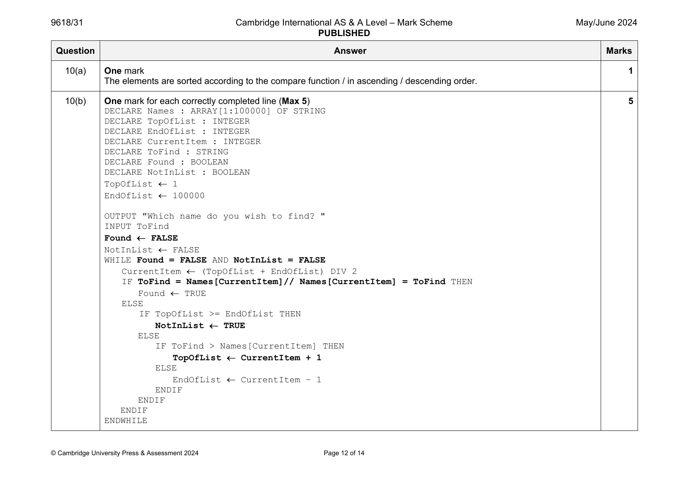
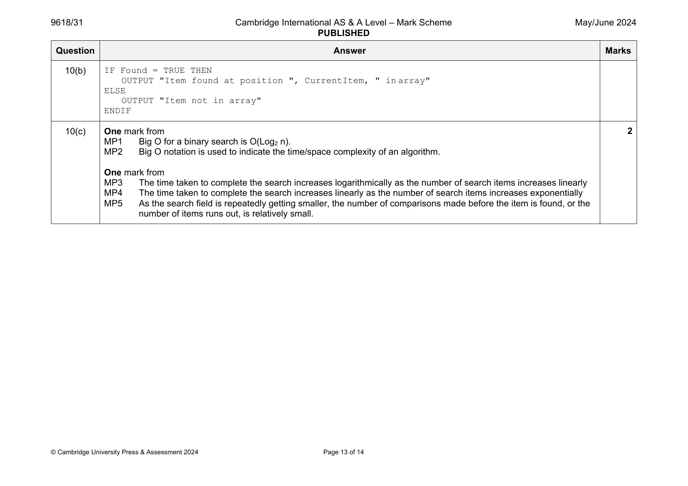
10(a) One mark 1
The elements are sorted according to the compare function / in ascending / descending order.
10(b) One mark for each correctly completed line (Max 5) 5
DECLARE Names : ARRAY[1:100000] OF STRING
DECLARE TopOfList : INTEGER
DECLARE EndOfList : INTEGER
DECLARE CurrentItem : INTEGER
DECLARE ToFind : STRING
DECLARE Found : BOOLEAN
DECLARE NotInList : BOOLEAN
TopOfList 1
EndOfList 100000
OUTPUT "Which name do you wish to find? "
INPUT ToFind
Found FALSE
NotInList FALSE
WHILE Found = FALSE AND NotInList = FALSE
CurrentItem (TopOfList + EndOfList) DIV 2
IF ToFind = Names[CurrentItem]// Names[CurrentItem] = ToFind THEN
Found TRUE
ELSE
IF TopOfList >= EndOfList THEN
NotInList TRUE
ELSE
IF ToFind > Names[CurrentItem] THEN
TopOfList CurrentItem + 1
ELSE
EndOfList CurrentItem – 1
ENDIF
ENDIF
ENDIF
ENDWHILE
© Cambridge University Press & Assessment 2024 Page 12 of 14
10(b) IF Found = TRUE THEN
OUTPUT "Item found at position ", CurrentItem, " in array"
ELSE
OUTPUT "Item not in array"
ENDIF
10(c) One mark from 2
MP1 Big O for a binary search is O(Log n).
2
MP2 Big O notation is used to indicate the time/space complexity of an algorithm.
One mark from
MP3 The time taken to complete the search increases logarithmically as the number of search items increases linearly
MP4 The time taken to complete the search increases linearly as the number of search items increases exponentially
MP5 As the search field is repeatedly getting smaller, the number of comparisons made before the item is found, or the
number of items runs out, is relatively small.
© Cambridge University Press & Assessment 2024 Page 13 of 14
Official mark scheme pages: 12, 13 · source PDF URL
9618-2024-mj-32-q08
May/June 2024 · Paper 32 · Question 8 · 8 marks
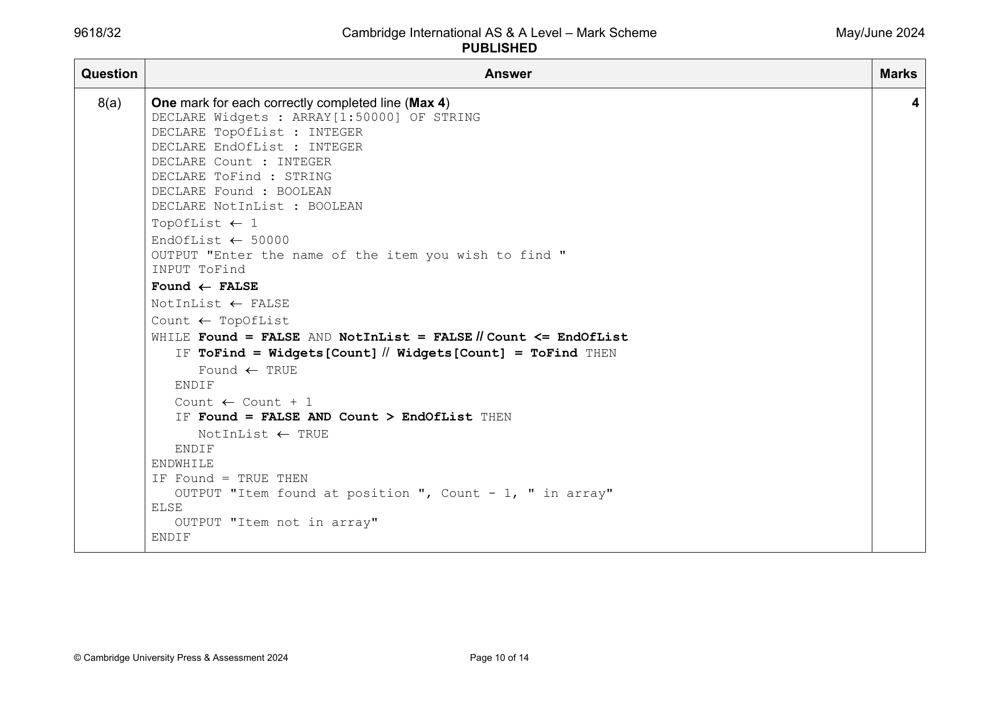
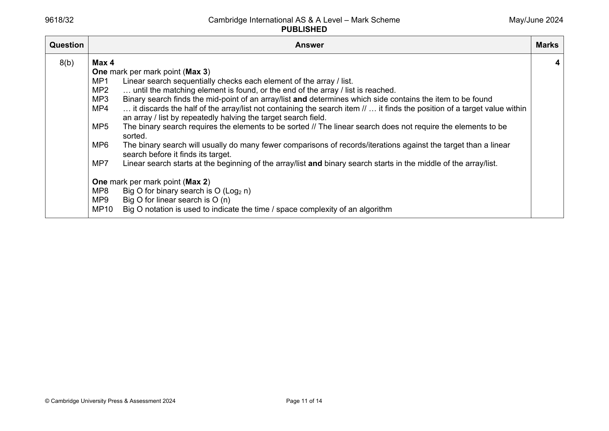
8(a) One mark for each correctly completed line (Max 4) 4
DECLARE Widgets : ARRAY[1:50000] OF STRING
DECLARE TopOfList : INTEGER
DECLARE EndOfList : INTEGER
DECLARE Count : INTEGER
DECLARE ToFind : STRING
DECLARE Found : BOOLEAN
DECLARE NotInList : BOOLEAN
TopOfList 1
EndOfList 50000
OUTPUT "Enter the name of the item you wish to find "
INPUT ToFind
Found FALSE
NotInList FALSE
Count TopOfList
WHILE Found = FALSE AND NotInList = FALSE // Count <= EndOfList
IF ToFind = Widgets[Count] // Widgets[Count] = ToFind THEN
Found TRUE
ENDIF
Count Count + 1
IF Found = FALSE AND Count > EndOfList THEN
NotInList TRUE
ENDIF
ENDWHILE
IF Found = TRUE THEN
OUTPUT "Item found at position ", Count - 1, " in array"
ELSE
OUTPUT "Item not in array"
ENDIF
© Cambridge University Press & Assessment 2024 Page 10 of 14
8(b) Max 4 4
One mark per mark point (Max 3)
MP1 Linear search sequentially checks each element of the array / list.
MP2 … until the matching element is found, or the end of the array / list is reached.
MP3 Binary search finds the mid-point of an array/list and determines which side contains the item to be found
MP4 … it discards the half of the array/list not containing the search item // … it finds the position of a target value within
an array / list by repeatedly halving the target search field.
MP5 The binary search requires the elements to be sorted // The linear search does not require the elements to be
sorted.
MP6 The binary search will usually do many fewer comparisons of records/iterations against the target than a linear
search before it finds its target.
MP7 Linear search starts at the beginning of the array/list and binary search starts in the middle of the array/list.
One mark per mark point (Max 2)
MP8 Big O for binary search is O (Log n)
2
MP9 Big O for linear search is O (n)
MP10 Big O notation is used to indicate the time / space complexity of an algorithm
© Cambridge University Press & Assessment 2024 Page 11 of 14
Official mark scheme pages: 10, 11 · source PDF URL
9618-2024-mj-33-q10
May/June 2024 · Paper 33 · Question 10 · 8 marks
10(a) One mark 1
The elements are sorted according to the compare function / in ascending / descending order.
10(b) One mark for each correctly completed line (Max 5) 5
DECLARE Names : ARRAY[1:100000] OF STRING
DECLARE TopOfList : INTEGER
DECLARE EndOfList : INTEGER
DECLARE CurrentItem : INTEGER
DECLARE ToFind : STRING
DECLARE Found : BOOLEAN
DECLARE NotInList : BOOLEAN
TopOfList 1
EndOfList 100000
OUTPUT "Which name do you wish to find? "
INPUT ToFind
Found FALSE
NotInList FALSE
WHILE Found = FALSE AND NotInList = FALSE
CurrentItem (TopOfList + EndOfList) DIV 2
IF ToFind = Names[CurrentItem]// Names[CurrentItem] = ToFind THEN
Found TRUE
ELSE
IF TopOfList >= EndOfList THEN
NotInList TRUE
ELSE
IF ToFind > Names[CurrentItem] THEN
TopOfList CurrentItem + 1
ELSE
EndOfList CurrentItem – 1
ENDIF
ENDIF
ENDIF
ENDWHILE
© Cambridge University Press & Assessment 2024 Page 12 of 14
10(b) IF Found = TRUE THEN
OUTPUT "Item found at position ", CurrentItem, " in array"
ELSE
OUTPUT "Item not in array"
ENDIF
10(c) One mark from 2
MP1 Big O for a binary search is O(Log n).
2
MP2 Big O notation is used to indicate the time/space complexity of an algorithm.
One mark from
MP3 The time taken to complete the search increases logarithmically as the number of search items increases linearly
MP4 The time taken to complete the search increases linearly as the number of search items increases exponentially
MP5 As the search field is repeatedly getting smaller, the number of comparisons made before the item is found, or the
number of items runs out, is relatively small.
© Cambridge University Press & Assessment 2024 Page 13 of 14
Official mark scheme pages: 12, 13 · source PDF URL
9618-2024-on-31-q05
Oct/Nov 2024 · Paper 31 · Question 5 · 5 marks
5(a) One mark per mark point (Max 3) 3
MP1 A hashing algorithm is used in direct access methods on random and sequential files
MP2 It is a mathematical formula
MP3 … used to perform a calculation applied to the key field of the record being searched / stored
MP4 The result of the calculation gives the address where the record should be found / stored.
5(b) One mark per mark point (Max 2) 2
MP1 The record is stored in the next free memory space after the one identified by the hashing algorithm // Use
linear progression
MP2 An overflow area is set up and the record is stored in the next free memory space in the overflow area.
Question Answer Marks
Official mark scheme pages: 7 · source PDF URL
9618-2024-on-33-q05
Oct/Nov 2024 · Paper 33 · Question 5 · 5 marks
5(a) One mark per mark point (Max 3) 3
MP1 A hashing algorithm is used in direct access methods on random and sequential files
MP2 It is a mathematical formula
MP3 … used to perform a calculation applied to the key field of the record being searched / stored
MP4 The result of the calculation gives the address where the record should be found / stored.
5(b) One mark per mark point (Max 2) 2
MP1 The record is stored in the next free memory space after the one identified by the hashing algorithm // Use
linear progression
MP2 An overflow area is set up and the record is stored in the next free memory space in the overflow area.
Question Answer Marks
Official mark scheme pages: 7 · source PDF URL
9618-2025-mj-31-q04
May/June 2025 · Paper 31 · Question 4 · 7 marks
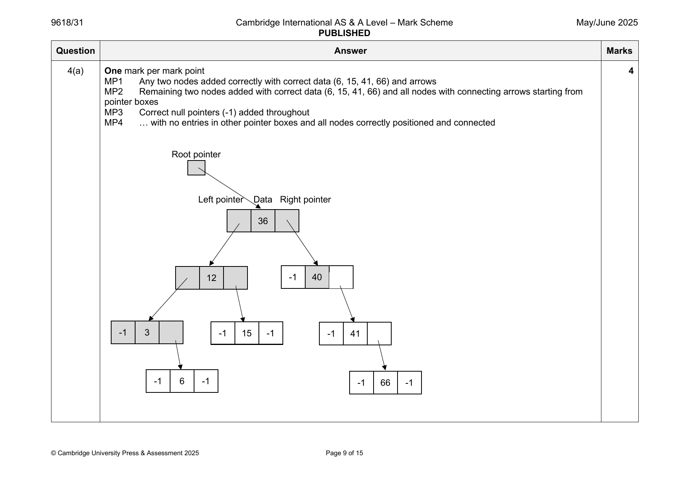
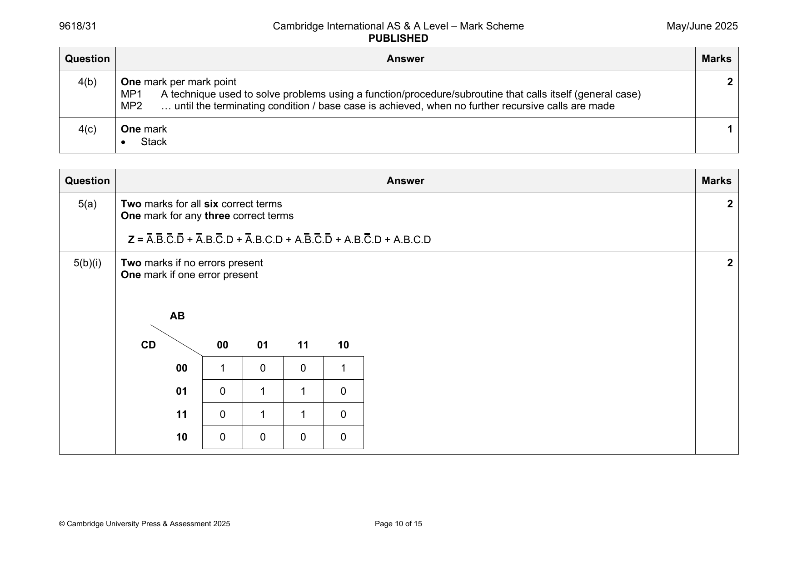
4(a) One mark per mark point 4
MP1 Any two nodes added correctly with correct data (6, 15, 41, 66) and arrows
MP2 Remaining two nodes added with correct data (6, 15, 41, 66) and all nodes with connecting arrows starting from
pointer boxes
MP3 Correct null pointers (-1) added throughout
MP4 … with no entries in other pointer boxes and all nodes correctly positioned and connected
Root pointer
Left pointer Data Right pointer
36
12 -1 40
-1 3 -1 15 -1 -1 41
-1 6 -1 -1 66 -1
© Cambridge University Press & Assessment 2025 Page 9 of 15
4(b) One mark per mark point 2
MP1 A technique used to solve problems using a function/procedure/subroutine that calls itself (general case)
MP2 … until the terminating condition / base case is achieved, when no further recursive calls are made
4(c) One mark 1
• Stack
Question Answer Marks
Official mark scheme pages: 9, 10 · source PDF URL
9618-2025-mj-31-q12
May/June 2025 · Paper 31 · Question 12 · 5 marks
12 One mark for each correctly completed line (Max 5) 5
DECLARE Location : INTEGER
DECLARE Item : STRING
DECLARE Continue : BOOLEAN
DECLARE Answer : CHAR
Continue TRUE
OPENFILE "StockList.dat" FOR RANDOM
WHILE Continue
OUTPUT "Enter a location between 1 and 500: "
INPUT Location
SEEK "StockList.dat", Location
GETRECORD "StockList.dat", Item
IF Item = "" THEN
OUTPUT "This record is missing"
ELSE
OUTPUT "The item in stock is ", Item
ENDIF
OUTPUT "Another location (Y or N)?"
INPUT Answer
IF Answer <> 'Y' THEN
Continue FALSE
ENDIF
ENDWHILE
CLOSEFILE "StockList.dat"
OUTPUT "End of program"
© Cambridge University Press & Assessment 2025 Page 15 of 15
Official mark scheme pages: 15 · source PDF URL
9618-2025-mj-32-q11
May/June 2025 · Paper 32 · Question 11 · 6 marks
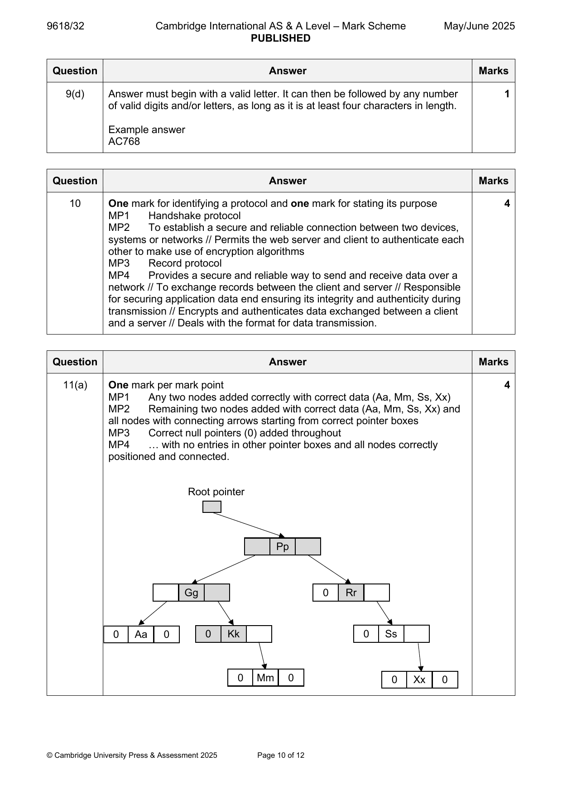

11(a) One mark per mark point 4
MP1 Any two nodes added correctly with correct data (Aa, Mm, Ss, Xx)
MP2 Remaining two nodes added with correct data (Aa, Mm, Ss, Xx) and
all nodes with connecting arrows starting from correct pointer boxes
MP3 Correct null pointers (0) added throughout
MP4 … with no entries in other pointer boxes and all nodes correctly
positioned and connected.
Root pointer
Pp
Gg 0 Rr
0 Aa 0 0 Kk 0 Ss
0 Mm 0 0 Xx 0
© Cambridge University Press & Assessment 2025 Page 10 of 12
11(b) One mark for feature and one mark for example (Max 2) 2
• Recursion is beneficial for algorithms when a problem naturally breaks
down into smaller versions of itself.
• … such as calculating a factorial / mathematical series / Fibonacci /
compound interest / tree traversal / evaluation of RPN expressions.
Question Answer Marks
Official mark scheme pages: 10, 11 · source PDF URL
9618-2025-mj-32-q13
May/June 2025 · Paper 32 · Question 13 · 5 marks
13 One mark for each correctly completed line 5
DECLARE Grade : StudentResult
DECLARE Position : INTEGER
OPENFILE "CurrentResults.dat" FOR RANDOM
OPENFILE "StoredResults.dat" FOR RANDOM
FOR Position 1 TO 50
SEEK "CurrentResults.dat", Position
GETRECORD "CurrentResults.dat", Grade
IF Grade.ExamGrade = "" THEN
Grade.ExamGrade "Missing grade"
ENDIF
SEEK "StoredResults.dat", Position
PUTRECORD "StoredResults.dat", Grade
NEXT Position
CLOSEFILE "CurrentResults.dat"
CLOSEFILE "StoredResults.dat"
© Cambridge University Press & Assessment 2025 Page 12 of 12
Official mark scheme pages: 12 · source PDF URL
9618-2025-mj-33-q11
May/June 2025 · Paper 33 · Question 11 · 5 marks
11 One mark for each correctly completed line 5
DECLARE Location : INTEGER
DECLARE NewStock : STRING
DECLARE CurrentStock : STRING
DECLARE Stored : BOOLEAN
DECLARE Max : INTEGER
Max 100000
Stored FALSE
Location 1
OPENFILE "StockList.dat" FOR RANDOM
OUTPUT "Enter the new item you wish to store"
INPUT NewStock
WHILE NOT Stored AND Location <= Max
SEEK "StockList.dat", Location
GETRECORD "StockList.dat", CurrentStock
IF CurrentStock = "" THEN
PUTRECORD "StockList.dat", NewStock
Stored TRUE
ELSE
Location Location + 1
ENDIF
ENDWHILE
IF Stored = FALSE THEN
OUTPUT "The new stock item has not been stored as the file was full"
ENDIF
CLOSEFILE "StockList.dat"
© Cambridge University Press & Assessment 2025 Page 14 of 16
Official mark scheme pages: 14 · source PDF URL
9618-2025-mj-33-q12
May/June 2025 · Paper 33 · Question 12 · 7 marks
12(a) One mark for any two correct ADTs (Max 1) 1
• Binary tree
• Graph
• Linked list
• Queue
• Stack
12(b) One mark for each marking point (Max 4) 4
MP1 Temporary assignment of the element being ‘inserted’ before inner loop
MP2 Appropriate inner loop
MP3 Check if current DataArray content is > Value
MP4 Moving data to adjacent element as required
MP5 Appropriate updating of Position variable
MP6 Re-insertion of the element outside the inner loop
Example algorithm
FOR Index 2 to 1000
Value DataArray[Index]
Position Index – 1
IF DataArray[Position] > Value THEN
WHILE Position >= 1 AND DataArray[Position] > Value
DataArray[Position + 1] DataArray[Position]
Position Position – 1
ENDWHILE
DataArray[Position + 1] Value
ENDIF
NEXT Index
12(c) One mark for each marking point 2
MP1 The performance of a sorting routine should improve if the data is already partially sorted // The performance of a
sorting routine is likely to be worse if the data is completely out of order
MP2 The sort may take longer if the number of items to be sorted is larger // The sort may take less time if the number
of items to be sorted is fewer.
© Cambridge University Press & Assessment 2025 Page 15 of 16
Official mark scheme pages: 15 · source PDF URL
9618-2025-mj-33-q13
May/June 2025 · Paper 33 · Question 13 · 114 marks
13 One mark for each marking point 4
MP1 Correct Index and Target columns
MP2 Correct Numbers[5] column
MP3 Correct Numbers[6] and Numbers[7] columns
MP4 Correct Numbers[8] column and no incorrect data added to any other of columns [1, 2, 3, 4, 9, 10]
Numbers
Index Target [1] [2] [3] [4] [5] [6] [7] [8] [9] [10]
1 15 2 3 7 11 15 17 19 23 0 0
2
3
4
5 17
6 19
7 23
8 0
9
© Cambridge University Press & Assessment 2025 Page 16 of 16
Official mark scheme pages: 16 · source PDF URL
9618-2025-on-31-q09
Oct/Nov 2025 · Paper 31 · Question 9 · 9 marks
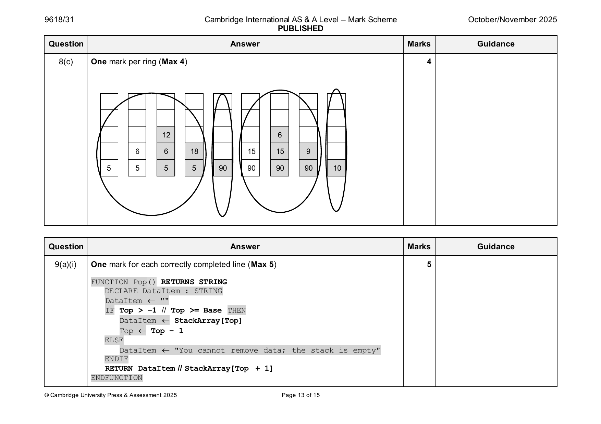

9(a)(i) One mark for each correctly completed line (Max 5) 5
FUNCTION Pop() RETURNS STRING
DECLARE DataItem : STRING
DataItem ""
IF Top > –1 // Top >= Base THEN
DataItem StackArray[Top]
Top Top – 1
ELSE
DataItem "You cannot remove data; the stack is empty"
ENDIF
RETURN DataItem // StackArray[Top + 1]
ENDFUNCTION
© Cambridge University Press & Assessment 2025 Page 13 of 15
9(a)(ii) OUTPUT "The data removed from the stack is ", Pop() 1
9(b) One mark per mark point (Max 3) 3
MP1 A recursive algorithm must call itself / have a general case
MP2 It must have a base case / have a stopping condition
MP3 It must change its state and move towards the base case
Question Answer Marks Guidance
Official mark scheme pages: 13, 14 · source PDF URL
9618-2025-on-32-q12
Oct/Nov 2025 · Paper 32 · Question 12 · 9 marks
12(a)(i) One mark for each correctly completed line (Max 4) 4
PROCEDURE Push(NewData : STRING)
IF Top < Max – 1 THEN
Top Top + 1
StackArray[Top] NewData
ELSE
OUTPUT "Stack full; new data cannot be added"
ENDIF
ENDPROCEDURE
12(a)(ii) One mark per mark point (Max 2) 2
MP1 Input with variable, with or without prompt
MP2 Procedure call for Push with parameter used matching input variable
Example answer
INPUT MyData
CALL Push(MyData)
12(b) One mark per mark point (Max 3) 3
MP1 Stacks store data in Last In First Out (LIFO) / First In Last Out (FILO) order
MP2 Each time a recursive algorithm calls itself data is pushed onto the stack
MP3 When the recursive algorithm reaches its base case / starts to unwind
MP4 … data is popped from the stack in the reverse order to which it was pushed onto it.
© Cambridge University Press & Assessment 2025 Page 17 of 17
Official mark scheme pages: 17 · source PDF URL
9618-2025-on-33-q08
Oct/Nov 2025 · Paper 33 · Question 8 · 5 marks
8 One mark per mark point - working (Max 3) 5
May be seen on diagram or in working section
MP1 Initialisation – setting Start to 0
MP2 … and the rest of the towns to
MP3 Evidence to show values at nodes being updated
MP4 Evidence to show ‘visited node(s)’
MP5 Evidence to show a correct calculation of at least one route
MP6 Evidence to show more than one route has been calculated for at
least one town
Correct Answers (Max 2)
Two marks for all six correct values
One mark for four or five correct values.
T V W X Y Z
6 10 13 18 21 28
Question Answer Marks Guidance
Official mark scheme pages: 12 · source PDF URL
9618-2025-on-33-q10
Oct/Nov 2025 · Paper 33 · Question 10 · 6 marks
10(a) One mark per mark point (Max 3) 3
MP1 Correct declaration of constant Maximum
MP2 Both correctly declared integers
MP3 Correct array declaration
Example answer
CONSTANT Maximum = 100
DECLARE Base : INTEGER
DECLARE Top : INTEGER
DECLARE StackArray : ARRAY[1:100] OF STRING
10(b) One mark per mark point (Max 3) 3
MP1 Correct procedure definition structure
MP2 Base pointer with appropriate value (0 or 1)
MP3 Top pointer with appropriate value (–1, 0, 1)
Example answer
PROCEDURE InitialiseStack()
Base 0
Top 0
ENDPROCEDURE
Question Answer Marks Guidance
Official mark scheme pages: 13 · source PDF URL
9618-2025-on-33-q11
Oct/Nov 2025 · Paper 33 · Question 11 · 3 marks
11 One mark per mark point (Max 3) 3
MP1 Recursion is beneficial for problems that can be broken down into
smaller, repetitive problems
MP2 … especially for problems that have many possible branches / are
too complex for an iterative approach
MP3 An example e.g. solving mathematical series, sorting a pile of
documents, etc.
© Cambridge University Press & Assessment 2025 Page 13 of 16
Official mark scheme pages: 13 · source PDF URL